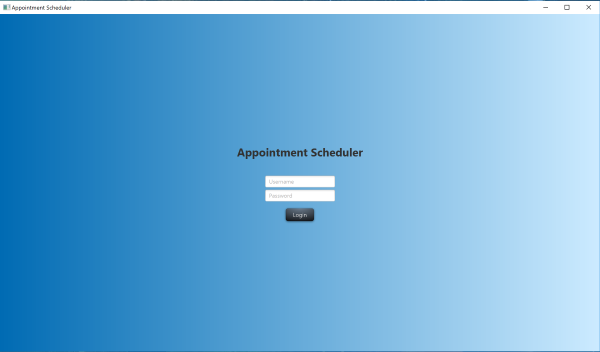
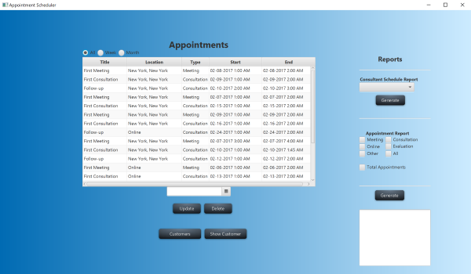
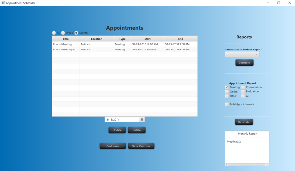
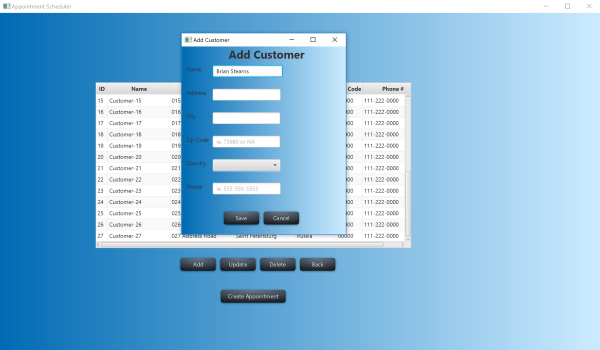

The appointment scheduler application is a full-stack JavaFX application that stores and uses data from a database. The business logic and database logic were programmed using Java. The frontend is xml and css.
I implemented a login system that queries a MySQL database in order to facilitate users securely logging in.
This is the main screen of the application where the list of appointments can be seen. From this screen appointments can be filtered by date, week, month, and a consultant schedule can be generated as well. All data is stored in the database.
Report data can be generated and displayed from the main screen. For example, how many of each kind of appointment there are.
Customers and appointments can be added to the system via popup windows.
